概述
上一讲介绍了单周期指令处理器的设计，最后对不同指令的执行时间进行了评估：
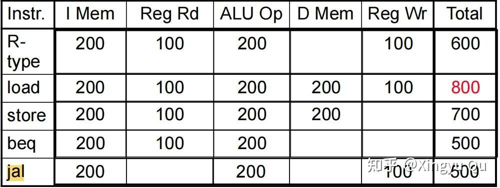
（一）多周期处理器设计
如果本讲将所有指令都在一个周期之内执行，那么必须把执行最长的指令时间作为单周期的时间，造成了时间浪费，且单个周期的时间过长，所以我们考虑多周期处理器的设计。
处理器由单周期向多周期转换不只是更改时钟周期那么简单，需要更复杂的控制通路设计（因为信号的主频提高，不同的状态逻辑单元需要响应信号变化）；此外，由于每个部件在一个周期只执行一个任务，所以有些部件可以省略或者合并。
但是需要考虑到，指令执行的每个阶段所用的时间长度不同，但是时钟周期固定，这导致了需要
（1）把最长的阶段时间长度作为clock cycle
（2）暂存住所用时间较短的阶段产生的数据
所以需要加入时序逻辑——寄存器：
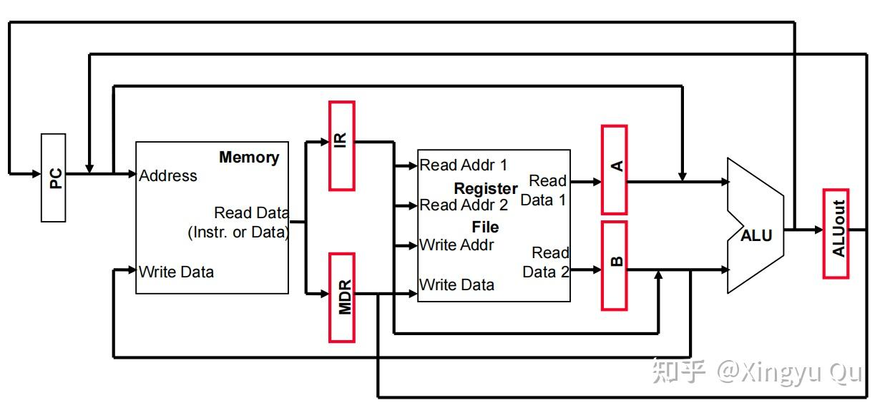
但是可以看到，虽然改成多周期处理器的主频升高了，但是我们执行一条指令的时间并没有变化。
所以现代的处理器架构都采用流水线（pipeline）的设计方式。
（二）流水线的执行阶段
根据指令的执行阶段本讲将流水线分为5个小的阶段：
（1）IF：从指令存储器取指
（2）ID: Instruction decode & register read （解码&读寄存器）
（3）EX: Execute operation or calculate address （执行操作/计算地址）
（4）MEM: Access memory operand （读&写内存）
（5）WB: Write result back to register（数据写回寄存器）
回看指令的执行时间：
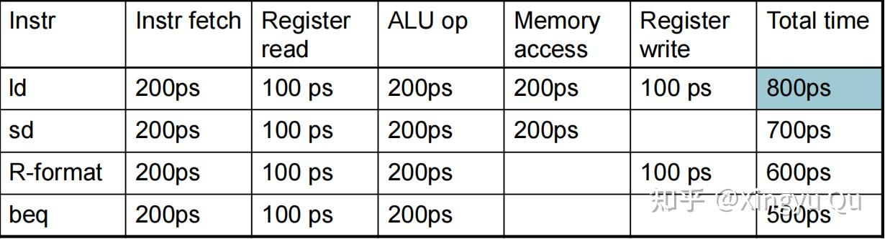
必须将ld指令（5个阶段都有数据流动）作为时钟周期的设计标准。
设计出的流水线架构如下图所示：
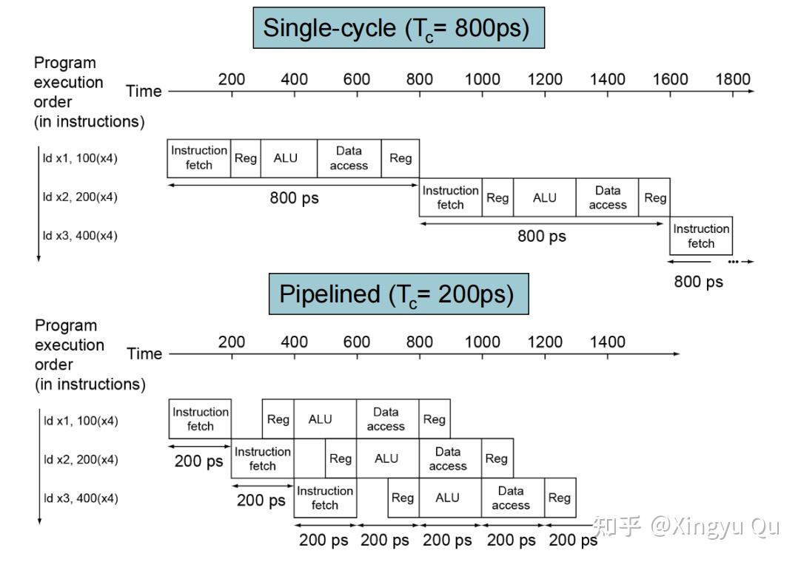
图中可以看出，时钟周期为200ps（最长的阶段时间）。
此外，还有一项精巧的设计——本讲将读寄存器放在后半时钟周期，写寄存器放在前半时间周期。
这是因为，我们在设计流水线架构的时候，在一个周期内，后序指令在后半周期可以读取到前序指令在前半周期写的数据。这样我们就可以节省一个周期。
（三）流水线的数据通路设计
1.流水线寄存器的加入
与多周期一样，流水线并非每个阶段都占据整个时钟周期，所以需要暂存住阶段数据。
因此我们考虑加入四个流水线寄存器（每两个阶段之间）：IF/ID、ID/EX、EX/MEM、MEM/WB
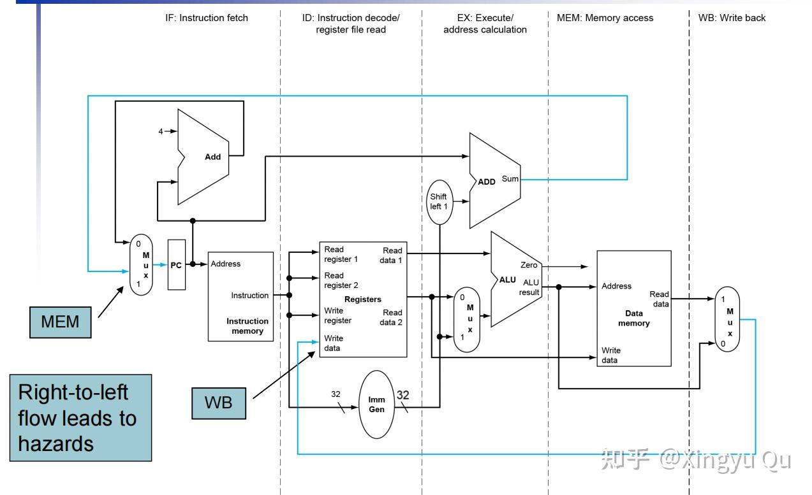
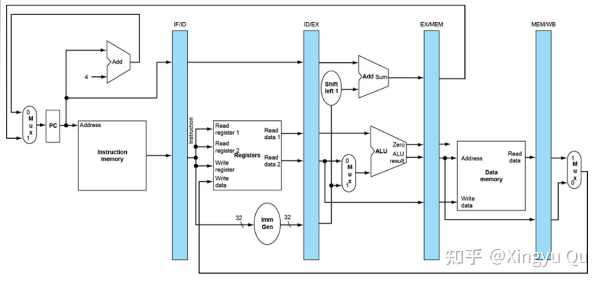
2.冒险
流水线的设计要点在于，不同指令的不同阶段在整个硬件上同时执行，其间可能发生冲突。
冒险主要分为三种：结构冒险、数据冒险、控制冒险。
（1）结构冒险：所需要的硬件处于忙碌状态。
结构冒险主要表现在存储结构上：在指令执行中，从内存中读取指令（IF）和读取数据（MEM）总是同时发生，所以采用指令和数据分开的存储架构（哈佛架构）。
（2）数据冒险：前后指令存在数据依赖
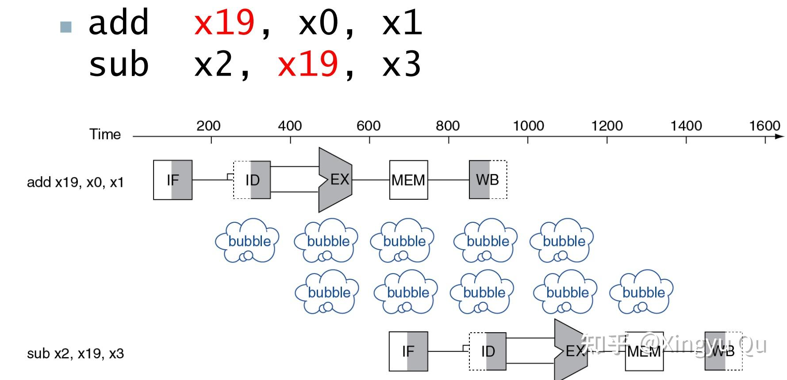
如图，add指令需要到WB的前半周期（800-900）才能写回寄存器，而因为存在x19的数据依赖，需要间隔两个周期才能进行sub指令，需要在流水线上添加气泡（nop指令、空指令）。
进一步观察可知，add指令在EX阶段结束之后x19就不会再动了，可以直接被后面的指令使用，不需要在寄存器中再存取一次了。
所以可以设计一种结构——旁路，改变数据流动的路径。
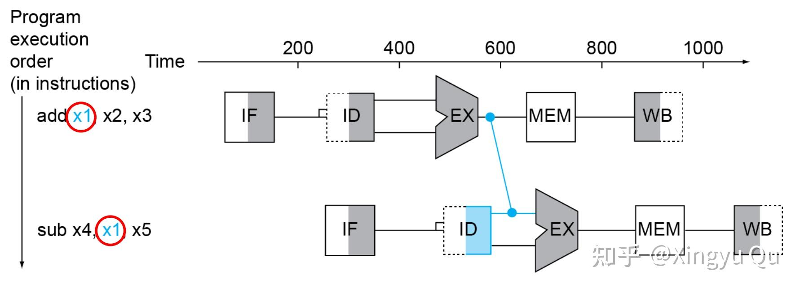
但是这种结构不一定保证不需要填充空指令——
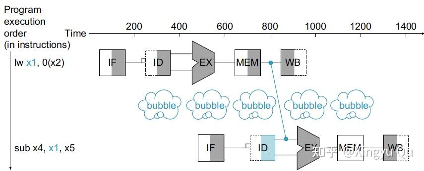
当ld指令与后面紧接着的一条指令中出现数据依赖时，需要在MEM指令阶段结束之后才会得到数据，这时候在时间上无法解决数据依赖的问题，必须空一周期。
这时在硬件上无法解决，要交给更上层处理——编译器
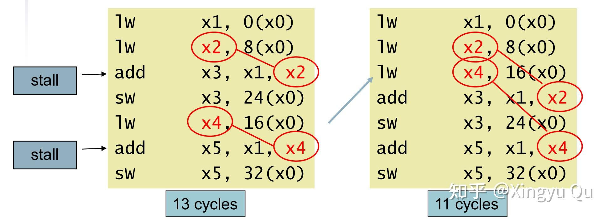
编译器改变了指令执行的顺序（当然不能改变程序运行的结果），使得具有load数据依赖的冒险无需添加nop指令即可解决。
当然完全依靠编译器解决，在应对大型程序时是极具有挑战的，一段时间以来只依赖编译器的优化策略并未真正取得成功，所以优先的优化策略仍是：结构冒险添加硬件，数据冒险添加通路。
（3）控制冒险
当程序存在分支指令时，需要根据分支预测的结果确定所取的下一条指令（修改的PC值），流水线并不一定保证所取的分支指令正确。
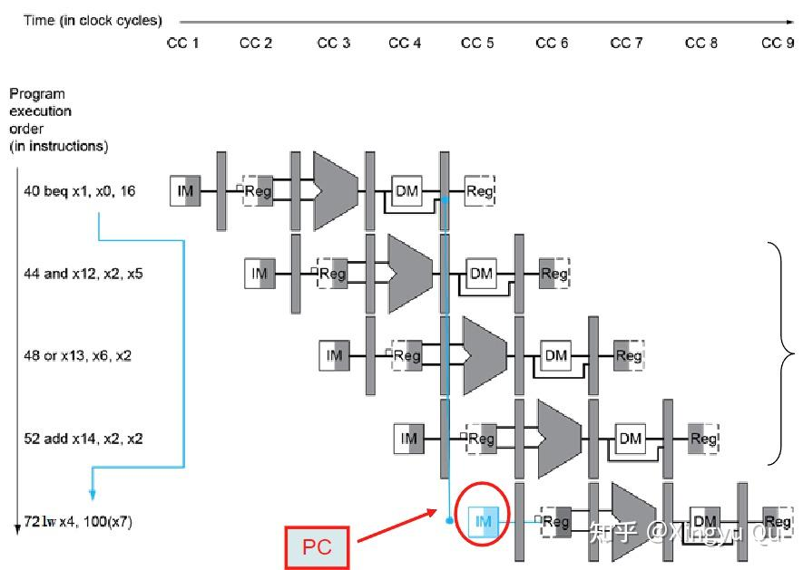
需要等待计算的zero，确定是否跳转才能执行指令，所以需要nop掉三条指令。
可以采取手段减少nop掉的指令数量：当beq指令执行时，我们在ID阶段就计算出转移判断的结果和转移地址，可以减少浪费周期。
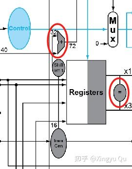
现在我们只需要延迟一个周期：
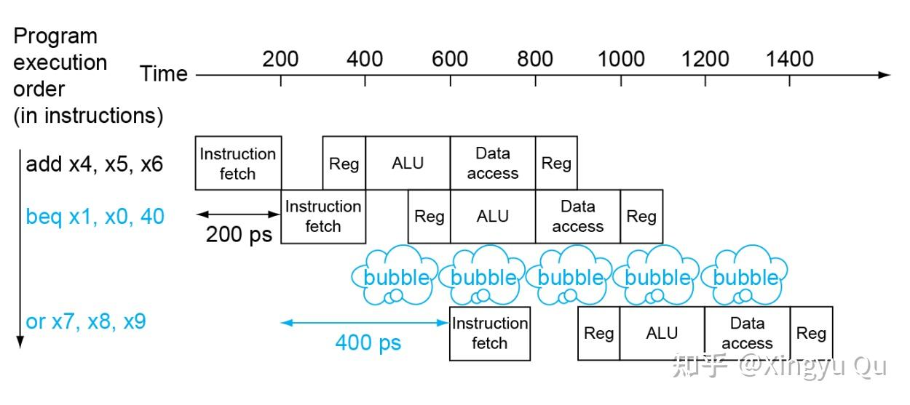
当然，现代的流水线采用预测的方式解决beq，最新的预测技术成功率可达98%。
总结
本讲介绍了多周期处理器的概型和流水线处理器的数据通路设计，下篇将会分享控制通路的设计和预测技术的实现。